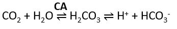

- Respiratory Acid-Base Balance
- *Ventilation usually adjusted to metabolic rate to maintain normal CO2 levels.
- What does increased respiratory rate or ventilation do to plasma [CO2]?
- What does decreased respiratory rate or ventilation do to plasma [CO2]?
- So how would the lungs (controlled by the brain) respond to ↑ plasma [CO2], ↑ plasma [H+], and ↓ plasma pH?
- And how would the lungs (controlled by the brain) respond to ↓ plasma [CO2], ↓ plasma [H+], and ↑ plasma pH?
